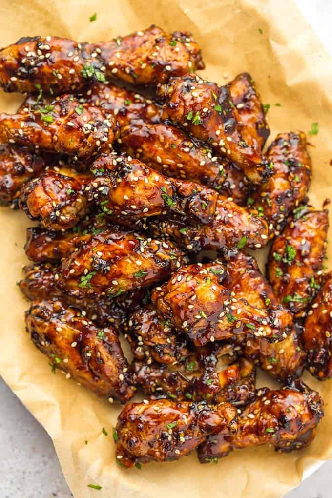

Honey Garlic Chicken Wings

These crispy baked chicken wings require
no frying, unlike other recipes. The meat
pieces are seasoned and baked to crispy
perfection, then, tossed in a sweet and
savory sauce that is full of flavor. The
garlic and ginger combo makes these
outstanding!
INGREDIENTS:
FOR THE CHICKEN WINGS:
- Chicken Wings
- Extra Virgin Oil
- Smoked Paprika
- Salt and pepper
- Garlic Powder
FOR THE HONEY GARLIC SAUCE:
- Soy Sauce
- Mirin
- Minced Garlic and ginger
- Honey or Maple Syrup
- Red Pepper Flakes
- Cornstarch
INSTRUCTIONS:
- Prep the oven to 425 degrees Fahrenheit
- Pat the wings dry with paper and add necessary seasoning
- Bake in the oven for about 35 minutes
- With a small pan over medium heat, add sauce ingredients
- Toss wings in the sauce in small batches
- Bake the wings again for about 10 minutes
- Gobble them down and enjoy!